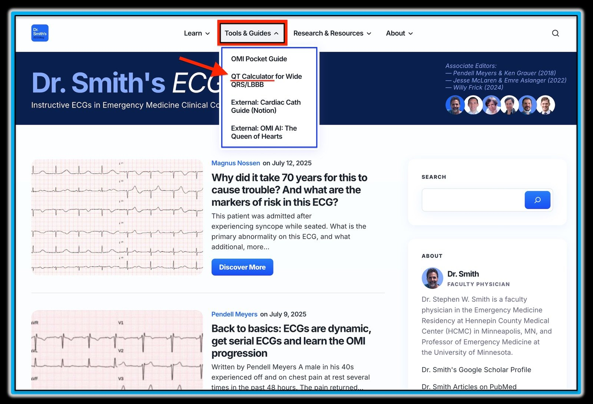
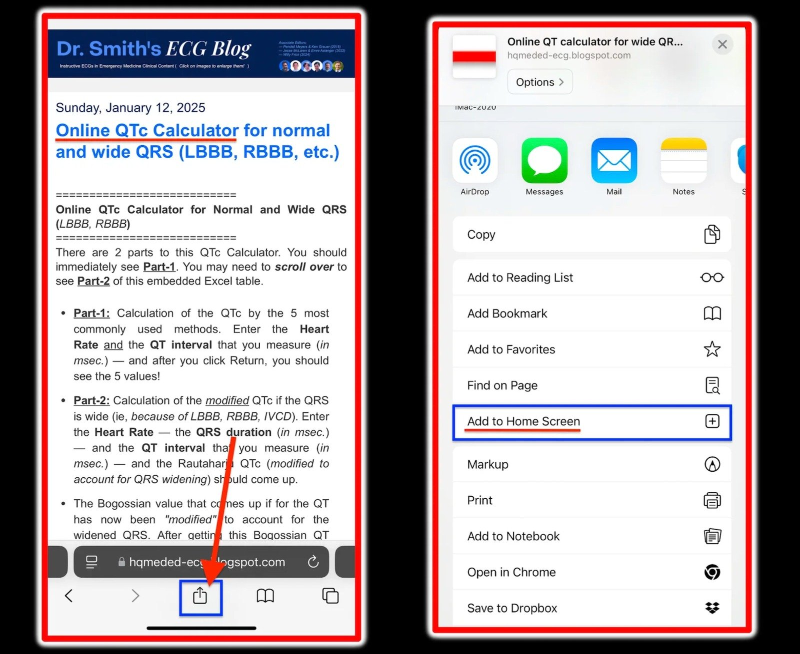
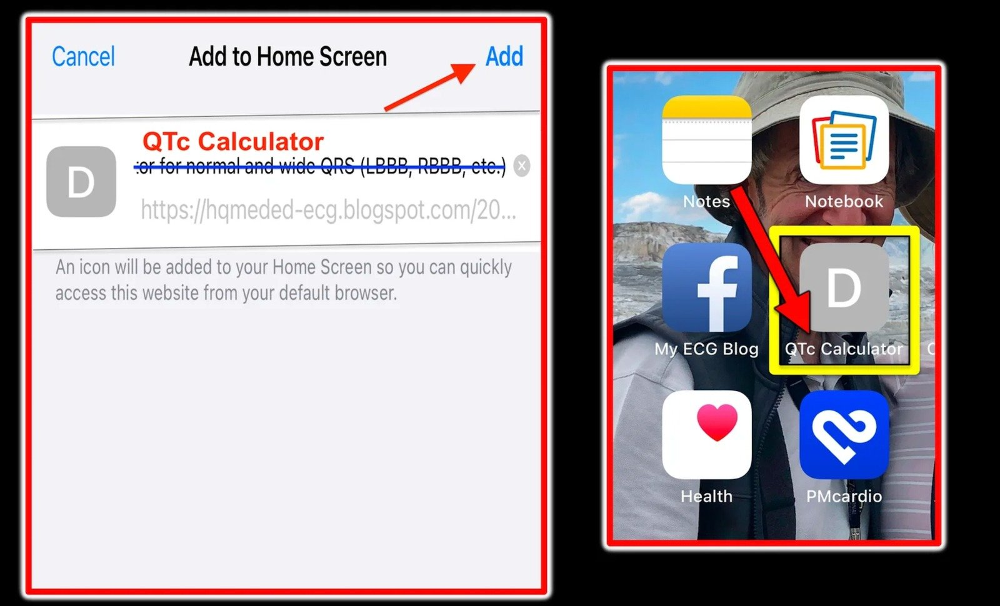
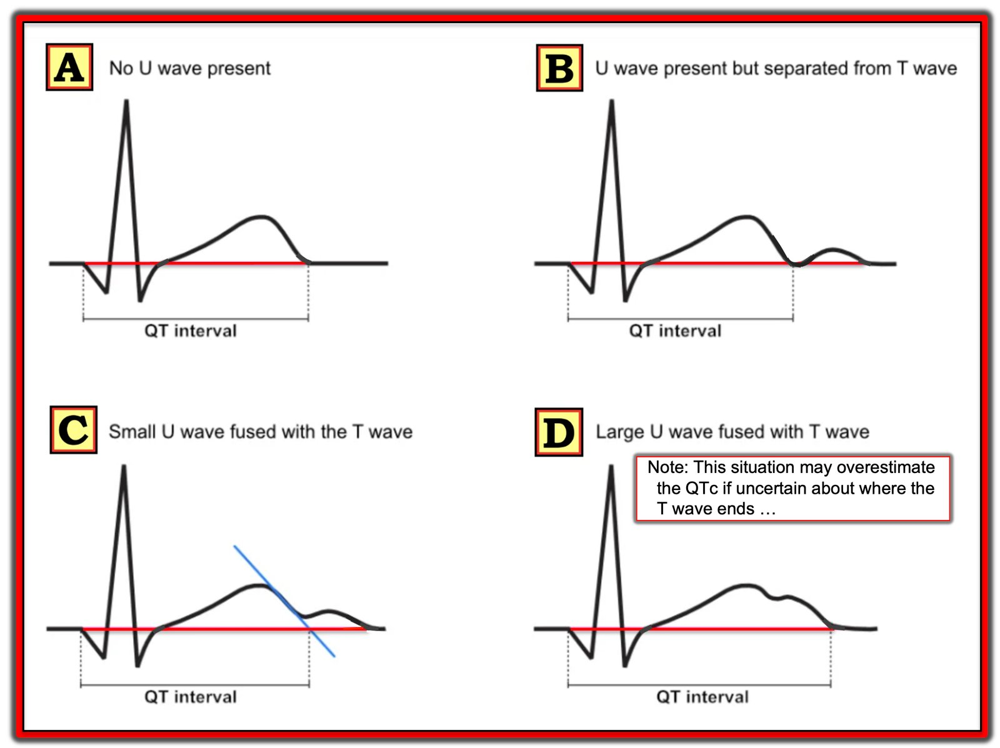
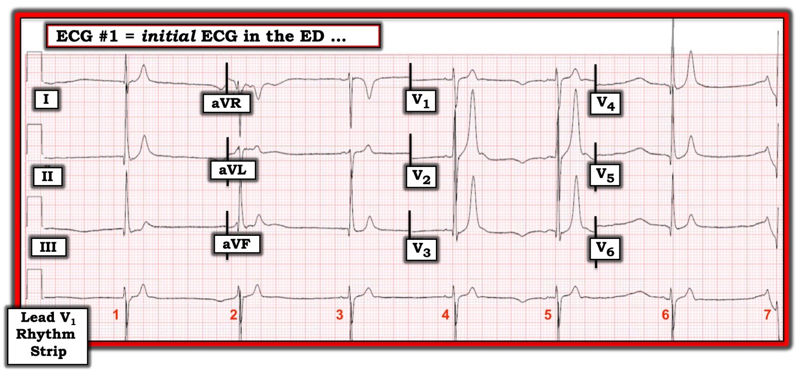
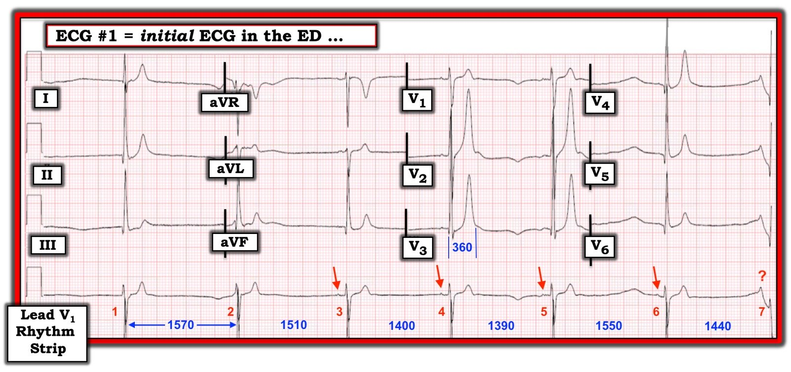

12/01/2025 — Máy tính QTc trực tuyến cho QRS bình thường và QRS rộng (LBBB, RBBB, v.v.)
Bản dịch tiếng Việt của bài "Online QTc Calculator for normal and wide QRS (LBBB, RBBB, etc.)" – Dr. Smith’s ECG Blog. Giữ nguyên toàn bộ 7 hình ảnh của bản gốc.

Máy tính QTc trực tuyến cho QRS bình thường và QRS rộng (như có thể gặp trong LBBB, RBBB hoặc IVCD )
Cập nhật ngày 1/9/2026 bởi Grauer & Smith (Đăng lần đầu ngày 12/1/25)
Có 2 Phần trong Máy tính QTc này:
- Phần 1: Tính QTc theo 5 phương pháp thường dùng nhất. Nhập Tần số tim và khoảng QT mà bạn đo được (tính bằng ms) — và sau khi bấm Return, bạn sẽ thấy ngay lập tức 5 giá trị!
- Phần 2: Tính QTc cải biên khi QRS rộng (tức là, do LBBB, RBBB, IVCD). Nhập Tần số tim — thời gian QRS (tính bằng ms) — khoảng QT mà bạn đo được (tính bằng ms) — và Giới (nam hoặc nữ) — rồi giá trị QTc theo Rautaharju (đã cải biên để tính đến tình trạng QRS giãn rộng) sẽ hiện ra.
- Giá trị QT theo Bogossian hiện ra giờ đã được “cải biên” để tính đến tình trạng QRS giãn rộng. Sau khi có giá trị QT theo Bogossian này — hãy đưa giá trị QT này vào Phần 1 để có QTc cải biên.
- Smith: Về mặt lâm sàng — “Có lẽ không nên ‘hiệu chỉnh’ khoảng QT khi tần số tim dưới 60/phút — vì nhịp chậm khiến bệnh nhân có nguy cơ xoắn đỉnh (Torsades de Pointes) cao hơn”.
- Xem bài ngày 12 tháng Bảy năm 2025 của Dr. Nossen — trong đó có trích câu nói này của Smith. Ca đó điểm lại câu chuyện hấp dẫn về một phụ nữ 70 mấy tuổi mà hội chứng QT dài “bẩm sinh” của bà chỉ được phát hiện khi bà đã ở độ tuổi 70!
- Grauer: Tôi xin bổ sung rằng các phép hiệu chỉnh khi tần số tim rất chậm thường kém chính xác hơn — với mức “hiệu chỉnh” tương đối ít hơn so với QT đo được khi tần số dưới ~60/phút.
Hiệu chỉnh theo tần số
Dùng cho mọi độ rộng QRS. Nhập tần số tim và khoảng QT mà bạn đo được.
Tần số tim nhịp/phút
Khoảng QT ms
| Công thức Bazett | — |
|---|---|
| Công thức Fridericia | — |
| Công thức Framingham | — |
| Công thức Hodges | — |
| Công thức Rautaharju | — |
QRS rộng LBBB, RBBB, IVCD
Hai cách tiếp cận đã được công bố, dùng khi QRS rộng tới mức làm QT dài ra.
Tần số tim nhịp/phút
Thời gian QRS ms
Khoảng QT ms
Giới Nam Nữ
| QTc cải biên theo Rautaharju | — |
|---|---|
| QT cải biên theo Bogossian | — |
Giá trị Bogossian là QT, không phải QTc. Hãy nhập giá trị này vào ô khoảng QT ở bên trái để hiệu chỉnh theo tần số.
LƯU Ý: Máy tính QT này do Arron Pearce xây dựng (với phần cải biên của Viktor Jurasek thuộc Powerful Medical).
- Máy tính này vẫn đang được hoàn thiện, vì chúng tôi muốn tiếp tục tối ưu hoá hiệu năng của nó. Trong khi chờ đợi — chúng tôi rất hoan nghênh ý kiến phản hồi của bạn (Gửi tới Ken Grauer, MD — ekgpress@mac.com).
- Grauer: — Vui lòng báo cho tôi biết nếu bạn không thể làm cho ứng dụng hoạt động (và nếu vậy — đó là loại thiết bị nào và trình duyệt nào không hoạt động tối ưu trên thiết bị đó. Xin cảm ơn! ).
Grauer: Việc bạn thấy các giá trị hơi khác nhau trong máy tính QTc ở trên cho thấy chưa có sự đồng thuận chung về cách tính QTc ở các tần số tim khác nhau. Dù vậy — 4 trong 5 phương pháp nhìn chung khá sát nhau (Bạn có thể nhẩm lấy trung bình các kết quả đó làm giá trị mình chọn — hoặc chọn phương pháp “ưa thích” của mình).
- Theo kinh nghiệm của chúng tôi — phương pháp Bazett có thể gây vấn đề, ở chỗ nó có xu hướng ước tính QTc quá cao khi tần số tim nhanh — và ước tính QTc quá thấp khi tần số tim chậm.
- Để ước tính QTc khi tần số chậm (tức là, dưới 60/phút) — như Dr. Smith đã nêu ở trên, cần thận trọng khi tính QTc ở tần số tim chậm vì: i) các phép hiệu chỉnh QT khi nhịp chậm không thật sự chính xác; — và, ii) Bất kể QTc mà bạn xác định được là bao nhiêu — bản thân nhịp chậm đã tự động làm tăng nguy cơ xoắn đỉnh. Dù vậy — trong các lựa chọn hiện có, công thức Fridericia dường như là tốt nhất để đánh giá QTc khi có nhịp chậm (Indraratna và cs. — J Gen Intern Med 35(3):865-873, 2019).
- Để ước tính QTc khi QRS rộng — tôi thấy phương pháp Bogossian có vấn đề vì công thức đơn giản hoá mà phương pháp Bogossian sử dụng bao hàm phép tính sau:
- QT cải biên = QT trừ đi ~50% thời gian QRS.
- Tuy nhiên, tất cả những gì phép tính QT cải biên này làm chỉ là trừ đi ~50% độ rộng QRS (tức là, với QRS giãn rộng = 0,16 giây — sẽ trừ 0,08 giây khỏi QT mà bạn đo được [người dịch: nguyên văn ghi “msec”, nhiều khả năng là lỗi đánh máy]). Như vậy, không có sự bù trừ nào cho bất kỳ thay đổi nào của tần số tim (và vì chúng ta biết QTc có thay đổi theo tần số tim nhanh hơn hay chậm hơn — tôi cho rằng phương pháp Bogossian có khiếm khuyết chí mạng).
PHẦN BỔ SUNG (12/7/2025):
Mục tiêu của chúng tôi với Máy tính QTc này rất đơn giản: Giúp ước tính QTc dễ dàng hơn (cho bất kỳ bản ghi nào — dù QRS bình thường hay rộng).
- Chúng tôi đã thêm một đường dẫn nhanh tới máy tính QTc trong Menu ở đầu mỗi trang của Dr. Smith's ECG Blog (Hình 1).
= = =
Hình 1: Đường dẫn nhanh tới Máy tính QTc trong Menu ở ĐẦU mỗi trang của Dr. Smith’s ECG Blog.


= = =
Thêm một Đường dẫn nhanh trên điện thoại thông minh của bạn!
- Hình 2 và 3 dưới đây cho thấy cách làm việc này dễ dàng trên iphone.
- Để biết cách làm với điện thoại thông minh của các hãng khác — Chỉ cần tìm trên Google: “Có thể thêm liên kết vào màn hình chính của Android không?” (hoặc của hãng điện thoại thông minh khác mà bạn đang dùng).
= = =
Hình 2: Để thêm một đường dẫn nhanh trên iphone — TRUY CẬP trang Máy tính QTc trong Dr. Smith’s ECG Blog. Khi đã ở đó — bấm vào biểu tượng nằm trong hình chữ nhật XANH DƯƠNG ở Menu phía dưới (Ô BÊN TRÁI). Thao tác này đưa bạn tới trang hiển thị trong Ô BÊN PHẢI — Cuộn xuống trang đó cho tới khi gặp mục “Thêm vào Màn hình chính” (Add to Home Screen).
- Ngoài ra (tuỳ theo trình duyệt và phiên bản cập nhật IOS của bạn) — Bạn có thể cần bấm vào 3 chấm ở góc dưới bên phải iphone — rồi bấm vào Chia sẻ (cùng biểu tượng như trong hình chữ nhật XANH DƯƠNG) — rồi cuộn xuống các tuỳ chọn cho tới khi gặp dấu + có dòng chữ "Thêm vào Màn hình chính" (Add to Home Screen).


= = =
Hình 3: Sau các thao tác ở Hình 2 — Bạn sẽ được đưa tới trang hiển thị trong Ô BÊN TRÁI. Bạn cần chọn một tiêu đề ngắn để “vừa” với màn hình iphone. Chúng tôi gợi ý “QTc Calculator” (Máy tính QTc). Sau đó bấm “Thêm” (Add) — vậy là xong! Bạn sẽ thấy đường dẫn nhanh tới Máy tính QTc trên màn hình chính của iphone (trong hình chữ nhật VÀNG, như trong Ô BÊN PHẢI).


= = =
- Rất hoan nghênh ý kiến phản hồi của bạn!
- (Ken Grauer, MD — ekgpress@mac.com )
= = =
LƯU Ý: Phần dưới đây là Bình luận của tôi ở cuối trang của bài ngày 12 tháng Bảy năm 2025 — trong đó Dr. Nossen điểm lại ca bệnh sâu sắc của một bệnh nhân mắc hội chứng QT dài “bẩm sinh” mà không được phát hiện cho tới khi bệnh nhân này ở độ tuổi 70! (để minh hoạ cách dùng Máy tính QTc khi QTc rất dài).
======================================
BÌNH LUẬN CỦA TÔI, bởi KEN GRAUER, MD (12/7/2025 ):
Một ca bệnh hấp dẫn của Dr. Nossen — về một bất thường điện tâm đồ “bẩm sinh” mà không khiến bệnh nhân phải đi khám cho tới nhiều thập kỷ sau!
- Tôi tập trung Bình luận của tôi vào một số điểm bổ sung cho những điểm đã được nêu trong phần bàn luận xuất sắc của Dr. Nossen ở trên.
- Để cho rõ, trong Hình 1 — tôi đã đánh dấu các vùng MẤU CHỐT trên điện tâm đồ ban đầu của ca hôm nay, là những vùng khiến tôi không chắc chắn về điều mình đang thấy.
= = =
QTc trên điện tâm đồ hôm nay dài bao nhiêu?
NHẮC LẠI: Xác định chính xác QTc ( = khoảng QT được hiệu chỉnh (corrected) theo tần số tim) là điều thiết yếu để xử trí tối ưu một số bệnh cảnh lâm sàng quan trọng. Điều này đặc biệt đúng với ca hôm nay, trong đó bệnh nhân xuất hiện bão loạn nhịp, với các cơn xoắn đỉnh (Torsades de Pointes) ( = một tình trạng cần xác định chính xác QTc để phân biệt với VT đa dạng, vốn có QTc bình thường).
- Để giúp xác định QTc ở các tần số tim khác nhau dễ dàng hơn — chúng tôi đã thêm một Máy tính QTc có thể truy cập dễ dàng từ Menu ở ĐẦU mỗi trang của Dr. Smith's ECG Blog.
- Vào mục Tools & Guides (Công cụ & Hướng dẫn) ở Menu phía TRÊN. Từ menu thả xuống, bấm vào QT Calculator (Máy tính QT). Thao tác này sẽ đưa bạn tới TRANG NÀY —
Dr. Nossen ước tính QTc trên điện tâm đồ ban đầu của ca hôm nay vào khoảng ~630 ms.
- Dr. Nossen có thể đúng.
- Suy nghĩ của tôi — Tôi không biết QTc trên điện tâm đồ ban đầu của ca hôm nay là bao nhiêu (để cho rõ, tôi đã trình bày lại điện tâm đồ này trong Hình 1).
- Lý do tôi không biết QTc trên điện tâm đồ #1 là bao nhiêu — là vì có một dạng điện thế luân phiên (electrical alternans), trong đó hoặc sóng T hoặc sóng U thay đổi kích thước và hình dạng theo kiểu cách một nhát một lần.
- Tôi thực sự không chắc trong Hình 1 — sóng T kết thúc ở đâu (và sóng U bắt đầu ở đâu). Nếu không xác định được điều này — thì không thể chắc chắn về khoảng QTc.
= = =
Hình 1: Tôi đã đánh dấu điện tâm đồ ban đầu của ca hôm nay. Sóng T kết thúc ở đâu và sóng U bắt đầu ở đâu? (Có hiện tượng sóng T hay sóng U luân phiên không?).

= = =
Xem kỹ hơn điện tâm đồ ban đầu của ca hôm nay:
Vì sao lại khó đánh giá khoảng QTc trên điện tâm đồ #1 đến vậy? Điều này có làm thay đổi cách xử trí bệnh nhân hôm nay của chúng ta không?
- Thử thách thứ 1 khi đánh giá bản ghi hôm nay — là chúng ta chỉ có 5 nhát để xem xét trong Hình 1 (tức là, Chính 5 nhát thấy ở các chuyển đạo ngực — cũng chính là những nhát thấy ở các chuyển đạo chi). Thêm vào đó — khoảng R-R không hoàn toàn đều. Như vậy, chúng ta chỉ có 5 nhát trong tình trạng loạn nhịp xoang này để xác định QTc.
- Tiếp theo — có một dạng sóng T hoặc sóng U luân phiên nào đó (Xem Bình luận của tôi ở cuối trang trong bài ngày 23 tháng Mười năm 2023 trên Dr. Smith's ECG Blog để ôn lại các dạng và ý nghĩa lâm sàng của điện thế luân phiên). Theo phần bàn luận ở trên của Dr. Nossen (và như đã được nêu trong ca ngày 23 tháng Mười năm 2023 được trích dẫn ở trên) — sự hiện diện của sóng T (và có lẽ cả sóng U) luân phiên nên được xem là lời cảnh báo cho người điều trị về nguy cơ xoắn đỉnh tăng lên đáng kể — trừ khi các yếu tố thúc đẩy được điều chỉnh kịp thời, và đặc biệt là điện giải huyết thanh được đưa về bình thường (thường có hỗ trợ bằng việc bổ sung magnesi tĩnh mạch).
Ví dụ — Hãy XEM LẠI Hình 1:
- Lưu ý sự thay đổi luân phiên về kích thước và hình thái, cứ cách một phức bộ QRS lại xuất hiện một lần (Thấy rõ nhất ở sóng T và sóng U trong các chuyển đạo I,II — và trong các chuyển đạo V1,V2).
- Chẳng phải ở chuyển đạo I và V1 trông như sóng T đang thay đổi rất rõ rệt sao (trở nên lớn hơn nhiều ở sóng T của các nhát #1,3,5?).
- Nhưng còn chuyển đạo II và V2? Chẳng phải trông như chính sóng U (chứ không phải sóng T) mới là sóng lớn lên nhiều ở các nhát luân phiên sao? (với một sóng U âm khổng lồ giờ thấy ở chuyển đạo V2 tại các nhát #1,3,5?).
- Hoặc có lẽ, thay vì hoặc sóng T hoặc sóng U — chính sự hợp nhất của sóng T và sóng U mới là nguyên nhân gây ra sự thay đổi hình thái bất thường thấy sau các phức bộ QRS luân phiên?
- LƯU Ý: Phần lớn các trường hợp — không khó để phân biệt điểm kết thúc của sóng T với điểm bắt đầu của sóng U. Nhưng ca hôm nay minh hoạ một trường hợp mà tôi không thể tự tin làm được điều đó.
- Đã có các hướng dẫn được trích dẫn về cách đo khoảng QT trong những trường hợp có sóng U nổi bật (Xem bên dưới). Nhưng như với Ô D trong Hình 2 của tôi dưới đây — việc tính cả một sóng U lớn trông như hợp nhất với sóng T đi trước vào khi xác định QT — có nguy cơ ước tính quá cao mức QTc khi vẫn còn chưa chắc chắn sóng T kết thúc ở đâu.
- Riera và cs. (Cardiol J 15(5):408-421, 2008) đề xuất dùng thuật ngữ "khoảng Q(T + U)" — khi khoảng này kéo dài rõ rệt, trong đó một sóng U có vẻ khổng lồ che lấp điểm kết thúc của sóng T.
- Riera cũng trích dẫn khuyến cáo, khi cân nhắc phân biệt giữa một sóng T hai đỉnh với một sóng T và sóng U — là đo khoảng cách giữa 2 đỉnh thấy được (như tôi minh hoạ dạng sơ đồ ở chuyển đạo V5 trong Hình 1).
- Nếu khoảng cách giữa 2 đỉnh này <150 ms ==> thì xem đây là một sóng T hai đỉnh.
- Nhưng nếu khoảng cách giữa các đỉnh >150 ms ==> Xem như có cả sóng T và sóng U. (tức là, Trong Hình 1 — khoảng cách giữa các đỉnh = 1 ô lớn trên giấy điện tâm đồ = 200 ms, điều mà nếu khuyến cáo trên là chính xác thì gợi ý rằng chúng ta đang thấy một sóng T và một sóng U trong Hình 1).
- Dù vậy, với sự khác biệt mà tôi đã nêu trước đó giữa những gì ta thấy ở sóng T trong các chuyển đạo I,V1 so với những gì ta thấy ở sóng U trong các chuyển đạo II,V2 trong Hình 1 — tôi thấy khó chấp nhận khuyến cáo về khoảng cách giữa hai đỉnh làm tiêu chuẩn duy nhất.
= = =
ĐIỀU CỐT LÕI:
Tôi vẫn không biết sóng T kết thúc ở đâu trong Hình 1 (tức là, tại điểm đường dọc màu XANH DƯƠNG nhạt cắt đường nền — hay tại điểm đường dọc màu ĐỎ cắt đường nền?).
- Về mặt lâm sàng — Sự phân biệt này không quan trọng. Mặc dù ước tính khoảng QTc của tôi đối với điện tâm đồ #1 trong ca hôm nay thấp hơn mức 630 ms mà Dr. Nossen ước tính — cả hai chúng tôi đều đồng ý rằng QTc kéo dài đáng kể!
- Cả hai chúng tôi cũng đồng ý rằng sự thay đổi hình thái bất thường xen kẽ từng nhát (bất kể đây là thay đổi của sóng T, của sóng U hay một sự hòa lẫn không phân định được của cả hai) — cho thấy có hoặc sóng T luân phiên hoặc sóng U luân phiên, đây là một cảnh báo nguy cơ cao xuất hiện xoắn đỉnh (Torsades) trừ khi các tình trạng chuyển hóa (và đặc biệt là nồng độ K+ và Mg++ huyết thanh) được điều chỉnh tối ưu nhanh chóng.
- Nhân tiện — Nguyên nhân gây ra sóng U trên điện tâm đồ đến nay vẫn chưa chắc chắn. Trong số các giả thuyết về cơ chế tạo sóng U có: sự tái cực của các sợi Purkinje — sự tái cực chậm của các cơ nhú — các hậu điện thế (after-potentials) gây ra bởi các lực cơ học trên thành thất — sự tái cực kéo dài của các "tế bào M" (M-cells) ở lớp giữa cơ tim. Nhưng — Thật sự không ai biết chắc ...
- ĐIỂM THEN CHỐT (PEARL) #1: Bất kể căn nguyên là sóng T hay sóng U — mức độ hòa lẫn rõ rệt giữa sóng T và sóng U thấy trên điện tâm đồ ban đầu của ca hôm nay là điển hình của LQTS (hội chứng QT dài) típ 1 — thể bệnh mà bệnh nhân hôm nay được phát hiện mắc phải.
- ĐIỂM THEN CHỐT (PEARL) #2: Từ lâu tôi đã xây dựng một DANH SÁCH dễ nhớ nhưng hữu ích đến bất ngờ gồm 3 Nguyên nhân cần xem xét mỗi khi bạn gặp một QTc dài ở bệnh nhân không có QRS rộng. Hãy nghĩ đến những điều sau! — i) Thuốc (như đã nêu ở trên trong phần bàn luận của Dr. Nossen); — ii) Điện giải (đặc biệt là K+ và Mg++ huyết thanh thấp — nhưng cũng có thể là Ca++ thấp); — và, iii) Rối loạn thần kinh trung ương (tức là, Đột quỵ [như ở bệnh nhân trong ca hôm nay] — Xuất huyết thần kinh trung ương — U não — Hôn mê — Co giật — Chấn thương đầu — vì một số điện tâm đồ bất thường nhất được thấy ở những bệnh nhân có một dạng cấp cứu thần kinh trung ương nào đó).
- Trong năm 2025 — tôi bổ sung vào DANH SÁCH trên, trong những bối cảnh lâm sàng phù hợp — iv) Bệnh cơ tim Takotsubo (do stress) (với sự phân bố giải phẫu bất thường của các bất thường ST-T trên điện tâm đồ, xảy ra kèm theo một khoảng QTc dài đến bất ngờ — gợi ý thực thể này ở bệnh nhân mới xuất hiện đau ngực, suy tim, stress nặng, v.v.).
= = =
Cách đo QTc khi có sóng U:
Trong Hình 2 — tôi đã phỏng theo hình được Rawshani công bố trong tài liệu tham khảo đầu tiên mà Dr. Nossen đã dẫn ở trên (Rawshani — Cardiovasc Med, 2025). Dưới đây tôi tổng hợp lại một số mẹo hữu ích do Rawshani đưa ra:
- Để có độ chính xác tối ưu — Hãy đo QT bằng tay, lý tưởng là dùng một loạt nhát liên tiếp — lấy từ nhiều hơn một chuyển đạo — và chọn khoảng QT dài nhất mà bạn có thể thấy rõ các mốc khởi đầu và kết thúc của QT.
- Khoảng QT cần được đo từ lúc khởi đầu phức bộ QRS đến lúc kết thúc sóng T (tức là, Nếu không có sóng Q — hãy bắt đầu đo từ sóng R).
- Lý tưởng là tránh các chuyển đạo có sóng U lớn. Mặc dù có khuyến cáo nên tính cả những sóng U lớn hòa lẫn với sóng T đi trước vào phép đo — Hãy nhận thức rằng làm như vậy có thể dẫn đến ước tính quá mức khoảng QT (và đây là một vấn đề đáng kể trong ca hôm nay!).
- Nhớ hiệu chỉnh khoảng QT theo tần số tim! (Xem phần Nhắc nhở của tôi ở trên, gần đầu Bình luận của tôi).
= = =
= = =
Hình 2: Cách đo QTc khi có sóng U (Hình phỏng theo Rawshani — Cardiovasc Med, 2025).


= = =
LƯU Ý: Phần dưới đây là Bình luận của tôi ở cuối trang của bài đăng ngày 2 tháng Chín năm 2019 — trong đó Dr. Meyers trình bày ca bệnh hấp dẫn của một bệnh nhân mắc hội chứng QT ngắn (minh họa cách dùng Công cụ tính QTc khi tần số nhanh và QT ngắn [người dịch: nguyên văn ghi “fast” (nhanh), nhưng ca dưới đây thực ra có nhịp chậm]).
- LƯU Ý: Bài viết dưới đây được viết vào năm 2019 — thời điểm mà chúng tôi dùng MD CALC để hỗ trợ xác định QTc (như được nhắc đến trong bài ngày 2/9/2019 này). Hiện nay chúng tôi đã tích hợp Công cụ tính QTc (QTc Calculator) của riêng mình — như chúng tôi hiển thị trong menu TRÊN CÙNG của mọi trang trong Dr. Smith's ECG Blog, mục Tools & Guides (Công cụ & Hướng dẫn).
======================================
BÌNH LUẬN CỦA TÔI, bởi KEN GRAUER, MD (2/9/2019 — cập nhật cho WordPress ngày 6/12/2025):
Một ca hay của Dr. Meyers về một thực thể điện tâm đồ quan trọng nhưng không thường gặp. Có lẽ cũng như nhiều độc giả của chuyên mục này — ban đầu tôi đã đặt tăng kali máu lên đầu danh sách chẩn đoán phân biệt của mình.
- Tuy vậy — nếu căn nguyên của hình dạng sóng T này hóa ra là tăng kali máu, thì đây sẽ là một trong những sóng T cao nhất và “mảnh mai” nhất mà tôi từng thấy ...
Dr. Meyers nhấn mạnh rằng một dấu hiệu cũng ấn tượng không kém hình dạng sóng T trên bản ghi này là khoảng QTc bị rút ngắn. Và, còn một dấu hiệu khác nữa ...
- Để rõ ràng, trong Hình 1 — tôi đã đánh số các nhát trên dải nhịp V1 dài.
= = =
CÂU HỎI #1: Nhịp là gì trong Hình 1?
= = =
Hình 1: Điện tâm đồ trong ca này. Nhịp là gì?


= = =
TRẢ LỜI: Nhịp trong Hình 1 là gì?
Phức bộ QRS hẹp. Mặc dù dễ bị bỏ qua nếu không đo cẩn thận — khoảng R-R trên dải nhịp V1 dài không đều. Hình 2 cho thấy sự thay đổi của các khoảng R-R (các số màu XANH biểu thị thời gian của khoảng R-R tính bằng mili giây).
- Sóng P dương với khoảng PR cố định đi trước các nhát #3,4,5 và 6 (mũi tên ĐỎ trên dải nhịp V1 dài). Có lẽ đây là các sóng P xoang — dù sóng P có biên độ cực nhỏ, và khoảng PR có vẻ tương đối ngắn.
- Chúng ta chỉ thấy 1 phức bộ QRS ở chuyển đạo II. Đây là nhát #1 — nhát này không có bất kỳ sóng P nào đi trước.
- Tôi cho rằng chỗ “lõm” âm biên độ nhỏ đi trước nhát #2 trên chuyển đạo V1 dài là nhiễu. Tôi không cho rằng có sóng P nào đi trước nhát #2.
- Nhát #7 bị cắt mất — và dấu hỏi ĐỎ, theo sau là một chỗ sụt xuống ở khoảng PR, cho thấy có nhiễu. Tôi không cho rằng có thể rút ra kết luận nào về hoạt động nhĩ đối với nhát #7.
- ĐIỀU CỐT LÕI: Khoảng R-R dài nhất trên chuyển đạo V1 dài nằm giữa nhát #1 và 2 (Hình 2) — và không nhát nào trong 2 nhát này có sóng P đi trước. Do đó, nhát #1 và 2 là các nhát thoát bộ nối. Nhịp nền trong Hình 1 là nhịp chậm xoang rõ rệt kèm loạn nhịp xoang — và khi tần số xoang chậm lại đủ mức, các nhát thoát bộ nối xuất hiện.
= = =
Hình 2: Tôi đã đánh số và ghi chú các phần chính của Hình 1 (Xem bài viết).


= = =
CÂU HỎI #2: QTc ngắn đến mức nào?
= = =
= = =
TRẢ LỜI: QTc được xác định bằng cách lấy khoảng QT dài nhất mà bạn có thể đo một cách chắc chắn trên điện tâm đồ 12 chuyển đạo — rồi hiệu chỉnh (correct) khoảng QT này theo tần số tim.
- Với tần số tim trên 60/phút (nếu dùng công thức Bazett) — QTc sẽ dài hơn khoảng QT mà bạn đo được.
- Với tần số tim chậm hơn (dưới 60/phút, nếu dùng công thức Bazett) — QTc sẽ ngắn hơn khoảng QT mà bạn đo được.
Nhìn vào bản ghi 12 chuyển đạo trong Hình 2 — tôi cho rằng khoảng QT dài nhất mà tôi có thể đo rõ ràng nằm ở chuyển đạo V2 hoặc V3. Tôi đo được 360 ms (các đường dọc mảnh màu XANH ở V3 cho thấy vị trí tôi đo). Các khoảng R-R cả trước lẫn bao gồm khoảng QT dài nhất đo được này tương ứng với tần số tim ~43/phút.
- MD CALC là một liên kết tiện dụng, cho phép hiệu chỉnh QT đo được theo tần số tim gần như tức thì — giúp bạn tính QTc theo bất kỳ công thức nào trong 4 công thức hiệu chỉnh thông dụng nhất ( = Bazett — Fridericia — Framingham — Hodges).
Khoảng QT đo được 360 ms = 9 ô nhỏ trên giấy kẻ ô điện tâm đồ. Nhập con số này vào MD CALC với tần số tim 43/phút cho ra các kết quả QTc như sau:
- Công thức Bazett: QTc = 305 ms.
- Công thức Fridericia: QTc = 322 ms.
- Công thức Framingham: QTc = 299 ms.
- Công thức Hodges: QTc = 330 ms.
= = =
Kết luận:
- Không có công thức nào hoàn hảo. Mỗi công thức đều có người ủng hộ. Có một số khác biệt giữa các giá trị QTc xác định được — nhưng rõ ràng trong Hình 2 là QTc rất ngắn.
- Vì tần số tim rất chậm — QTc hóa ra ngắn hơn đáng kể so với khoảng QT dài nhất đo được (là 360 ms).
= = =
CÂU HỎI #3: “Hội chứng QT ngắn” là gì?
= = =
= = =
TRẢ LỜI: Một bài tổng quan hay của Rudic và cs. về hội chứng QT ngắn (SQTS) được đăng trên Arrhythm Electrophysiol Rev 3(2):76-79, 2014.
- Như được nhấn mạnh trong bài này — SQTS là một bệnh kênh ion tim di truyền, được xác định dựa trên sự hiện diện của triệu chứng (ngất, ngừng tim), tiền sử gia đình dương tính, và dấu hiệu khoảng QTc ngắn bất thường trên điện tâm đồ.
- SQTS là một chẩn đoán tương đối mới, chỉ được công nhận là một thực thể lâm sàng riêng biệt từ năm 2000. Bệnh hiếm gặp — nhưng tầm quan trọng của nó nằm ở chỗ là một nguyên nhân tiềm tàng gây rối loạn nhịp nhĩ và thất, kể cả ngừng tim. Điều trị bằng ICD (máy khử rung tim cấy được — implantable cardioverter defibrillator).
- Nam giới có QTc ≤330 ms — và nữ giới có QTc ≤340 ms được xác định là mắc SQTS, ngay cả khi không có triệu chứng.
- Nam giới có QTc ≤360 ms — và nữ giới có QTc ≤370 ms được xem là có QTc “ngắn”. Những bệnh nhân này có thể mắc SQTS nếu, ngoài QTc “ngắn”, còn có tiền sử ngừng tim, ngất không rõ nguyên nhân hoặc rung nhĩ khi còn trẻ.
= = =
CÂU HỎI #4: Các đặc điểm điện tâm đồ của “Hội chứng QT ngắn” là gì?
= = =
= = =
TRẢ LỜI: Một loạt đột biến gen đã được mô tả liên quan đến SQTS (Xem liên kết tới bài viết nói trên của Rudic và cs.). Theo định nghĩa — các đột biến gen này đều liên quan đến khoảng QTc ngắn, như đã định nghĩa ở trên trong phần trả lời Câu hỏi #3.
- Đôi khi, bất thường duy nhất trên điện tâm đồ là khoảng QTc quá ngắn.
- NHƯNG — một số bệnh nhân SQTS biểu hiện những hình ảnh điện tâm đồ đặc trưng. Một trong những hình ảnh này gồm các sóng T có dạng cao, nhọn, đối xứng và đáy hẹp, với hình thái hoàn toàn phù hợp với các sóng T trong Hình 2 (đặc biệt là sóng T ở các chuyển đạo V2, V3 và V4).
- Sóng U thường nổi bật trong SQTS (Thấy rõ nhất ở chuyển đạo V2 của Hình 2).
- Đôi khi không có đoạn ST (tức là, sóng T có thể dường như đi ngay sau phức bộ QRS). Điều này không xảy ra trong Hình 2 — vì ở đây có một đoạn ST ngắn.
= = =
ĐIỀU CỐT LÕI:
Ca bệnh bi thảm này của một nam thanh niên bệnh nặng nguy kịch do vết thương đạn bắn vào đầu đã mang đến cho chúng ta điện tâm đồ hấp dẫn trong Hình 1.
T.B. (P.S.) — Rất dễ bỏ sót một QTc ngắn. Đừng quên tìm dấu hiệu này ở những bệnh nhân bị ngất, ngừng tim và/hoặc rối loạn nhịp không rõ nguyên nhân.
- Các dấu hiệu chính gồm sóng T cực cao, nhọn và đỉnh sắc với đáy hẹp + QTc cực ngắn không được giải thích bởi tăng kali máu hay tăng calci máu — vì cả hai chất điện giải này đều nằm trong giới hạn bình thường.
- Các thảm họa thần kinh trung ương (như trong trường hợp bệnh nhân hôn mê này) — thường biểu hiện với QTc kéo dài rõ rệt — và về mặt hình thái, với các sóng T rộng xòe ra thành một đáy rộng. Nếu có thì — nhịp chậm lẽ ra còn làm QT kéo dài thêm. Ngoài nhịp chậm này, người ta sẽ không dự đoán thấy các dấu hiệu điện tâm đồ như ở đây trong tình trạng hôn mê do chấn thương thần kinh trung ương.
- Từ ca này tôi học được rằng hình thái sóng T thấy trong Hình 1 hoàn toàn phù hợp với một trong các hình ảnh điện tâm đồ của SQTS, ở bệnh nhân này có QTc bị rút ngắn rõ rệt (Xem Hình 1 trong bài tổng quan của Rudic và cs. được dẫn ở trên).
- Theo Dr. Meyers (và khi không có điện tâm đồ cũ để so sánh) — chúng ta có thể nghi ngờ mạnh rằng điện tâm đồ của bệnh nhân này đã tình cờ phát hiện một SQTS bẩm sinh chưa từng được phát hiện trước đó.
- T.B. (P.S.) — Rất dễ bỏ sót một QTc ngắn. Đừng quên tìm dấu hiệu này ở những bệnh nhân bị ngất, ngừng tim và/hoặc rối loạn nhịp không rõ nguyên nhân.
= = =
= = =
= =
= =
= = =
= = =
= = =
= = =
= = =